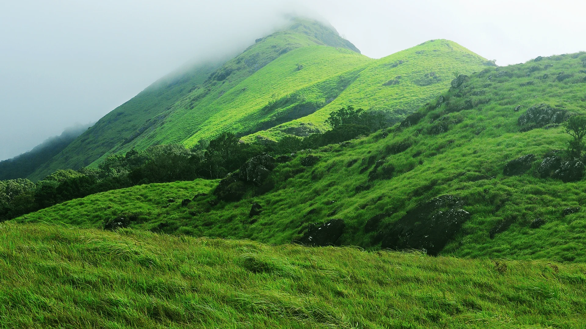
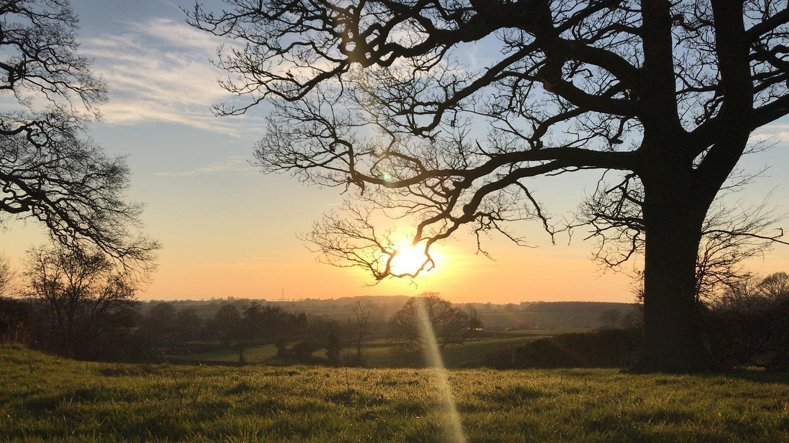

Top Destinations
Discover the enchanting beauty of Kerala, where lush greenery meets tranquil backwaters and pristine beaches. Often hailed as "God's Own Country," this southern gem offers a unique blend of serene landscapes and vibrant culture. Explore the meandering backwaters of Alleppey, unwind on the golden sands of Kovalam Beach, and immerse yourself in the rich traditions of Kathakali and Ayurvedic wellness. With its warm hospitality, diverse cuisine, and stunning natural beauty, Kerala promises an unforgettable experience for every traveler. Come and experience the magic of Kerala—where every moment is a journey into paradise.

Athirapilly Falls,Thrissur
Athirappilly Waterfalls, often referred to as the "Niagara of India," is a stunning natural wonder located in Thrissur, Kerala. This majestic waterfall drops from a height of 80 feet and spans about 330 feet wide, offering a breathtaking spectacle of roaring water amidst lush green forests. The falls are part of the Chalakudy River and are situated in a picturesque setting that attracts nature lovers, photographers, and adventure seekers. Visitors can enjoy scenic walks, bird watching, and the chance to spot various wildlife species in the surrounding forest. The mesmerizing beauty and serene environment of Athirappilly Waterfalls make it a must-visit destination for tourists seeking a refreshing escape in nature.

Munnar,Idukki
Munnar, located in the Idukki district of Kerala, is a picturesque hill station known for its sprawling tea plantations, misty mountains, and serene landscapes. At an elevation of about 1,600 meters, Munnar offers a cool, refreshing climate and stunning views of rolling hills. Key attractions include the Eravikulam National Park, home to the endangered Nilgiri Tahr, the Anamudi Peak, the highest peak in South India, and the beautiful Mattupetty Dam. Tourists can also enjoy activities like trekking, bird watching, and visiting the Tea Museum to learn about the region's rich tea heritage. Munnar's natural beauty and tranquil ambiance make it a perfect escape for nature lovers and adventure enthusiasts.

Chembra Peak,Wayanad
Chembra Peak in Wayanad, Kerala, attracts tourists with its stunning natural beauty and adventurous trekking opportunities. Standing at approximately 2,100 meters, it is the highest peak in the region, offering panoramic views of the Western Ghats. The trek to the peak is popular for its picturesque landscapes, lush greenery, and a unique heart-shaped lake that adds a romantic touch to the journey. Nature enthusiasts, adventure seekers, and photographers are particularly drawn to Chembra Peak for its serene environment and the chance to explore the rich biodiversity of the area.

Parambikulam Wildlife Sanctuary,Palakkad
Parambikulam Wildlife Sanctuary, located in Kerala's Palakkad district, is a haven for nature lovers and wildlife enthusiasts. It boasts a rich biodiversity, home to tigers, elephants, leopards, and various bird species. The sanctuary features lush forests, serene lakes, and the Parambikulam Dam. Activities such as jungle safaris, bamboo rafting, and guided nature walks offer visitors an immersive experience in the wilderness, making it a must-visit destination for those seeking adventure and tranquility in a pristine natural setting.
About kerala

Kerala, located in the southwestern region of India, is renowned for its lush landscapes, intricate network of backwaters, and rich cultural heritage. Often referred to as "God's Own Country," Kerala boasts a diverse ecosystem that includes serene beaches, verdant hill stations, and dense forests. The state's economy thrives on a mix of agriculture, particularly spices and rubber, and a robust tourism industry. Kerala is also known for its high literacy rates, progressive social reforms, and a vibrant tradition of classical arts such as Kathakali and Mohiniyattam. With its unique blend of natural beauty and cultural richness, Kerala remains a captivating destination for travelers and scholars alike.